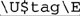

7.2. Perl's Regex Flavor
Table 7-2 on the facing page summarizes Perl's regex flavor. It used to be that Perl had many metacharacters that no other system supported, but over the years, other systems have adopted many of Perl's innovations. These common features are covered by the overview in Chapter 3, but there are a few Perl-specific items discussed later in this chapter. (Table 7-2 has references to where each item is discussed.)
The following notes supplement the table:
➀\b is a character shorthand for backspace only within a character class. Outside of a character class, \b matches a word boundary (☞133). Octal escapes accept two- and three-digit numbers. The  \xnum \xnum hex escape accepts two-digit numbers (and one-digit numbers, but with a warning if warnings are turned on). The \x{num} syntax accepts a hexadecimal number of any length. hex escape accepts two-digit numbers (and one-digit numbers, but with a warning if warnings are turned on). The \x{num} syntax accepts a hexadecimal number of any length. Table 7-2. Overview of Perl's Regular-Expression Flavor|
Character Shorthands ➀ |
|---|
☞115 (c) | \a [\b] \e \f \n \r \t \octal \xhex \x{hex} \cchar | |
Character Classes and Class-Like Constructs | ☞118 | Classes: [⋯] [^⋯] (may contain POSIX-like [:alpha:] notation;☞127) | ☞119 | Any character except newline: dot (with /s, any character at all) | ☞120 | Unicode combining sequence: \X | ☞120 | Exactly one byte (can be dangerous): \C | ☞120 (c) | Class shorthands: ➁ \w \d \s \W \D \S | ☞121 (c) | Unicode properties, scripts, and blocks: ➂ \p {Prop} \P{Prop} | |
Anchors and Other Zero-Width Tests | ☞129 | Start of line/string: ^ \A | ☞129 | End of line/string: $ \z \Z | ☞315 | End of previous match: \G | ☞133 | Word boundary:➃ \b \B | ☞133 | Lookaround: ➄ (?= ⋯) (?! ⋯) (?< =⋯) (?< !⋯) | |
Comments and Mode Modifiers | ☞135 | Mode modifiers: ➅ (?mods-mods) Modifiers allowed: x s m i (☞292) | ☞135 | Mode-modified spans: (?mods-mods:⋯) | ☞136 | Comments: (?#⋯) # ⋯ (with /x, also from '#' until newline or end of regex) | |
Grouping, Capturing, Conditional, and Control | ☞137 | Capturing parentheses: (⋯) \1 \2 ... | ☞137 | Grouping-only parentheses: (?:⋯) | ☞139 | Atomic grouping: (?>⋯) | ☞139 | Alternation: | | ☞140 | Conditional: (? if then | else) "if" can be embedded code, lookaround, or (num) | ☞141 | Greedy quantifiers: * + ? {n} {n,} {x,y} | ☞141 | Lazy quantifiers: *? +? ?? {n}? {n,}? {x,y}? | ☞327 | Embedded code: (?{ ⋯}) | ☞327 | Dynamic regex: (?? {⋯}) | |
In Regex Literals Only | ☞289 (c) | Variable interpolation: $name @name | ☞290 (c) | Fold next character's case: \l \u | ☞290 (c) | Case-folding span: \U \L ... \E | ☞290 (c) | Literal-text span: \Q ... \E | ☞290 (c) | Named Unicode character: \N{name} optional; see page 290 | |
(c) may also be used within a character class ➀·➅ see text |
➁\w, \d, \s, etc., fully support Unicode.
Perl's
\s does not match an ASCII vertical tab character (☞115). ➂Perl's Unicode support is for Unicode Version 4.1.0. Unicode Scripts are supported. Script and property names may have the 'Is' prefix, but they don't require it (☞125). Block names may have the 'In' prefix, but require it only when a block name conflicts with a script name. The \p{L&} pseudo-property is supported, as well as \p{Any},
\p{All},
\p{Assigned},
and \p{Unassigned}.
The long property names like \p{Letter}
are supported. Names may have a space, underscore, or nothing between the word parts of a name (for example \p{Lowercase_Letter} may also be written as \p{LowercaseLetter} or \p{Lowercase grey.g Letter}.) For consistency, I recommend using the long names as shown in the table on page 123. \p{^⋯ } is the same as \P{⋯}. ➃Word boundaries fully support Unicode. ➄Lookaround may have capturing parentheses. Lookbehind is limited to subexpressions that always match fixed-width text. ➅The /x
modifier recognizes only ASCII whitespace. The /m modifier affects only newlines, and not the full list of Unicode line terminators. The /i modifier works properly with Unicode.
Not all metacharacters are created equal. Some "regex metacharacters" are not even supported by the regex engine, but by the preprocessing Perl gives to regex literals.
7.2.1. Regex Operands and Regex Literals
The final items in Table 7-2 are marked "regex literals only." A regex literal
is the "regex" part of m/regex/, and while casual conversation refers to that as "the regular expression," the part between the '/' delimiters is actually parsed using its own unique rules. In Perl jargon, a regex literal is treated as a "regex-aware doublequoted string," and it's the result of that processing that's passed to the regex engine. This regex-literal processing offers special functionality in building the regular expression.
For example, a regex literal offers variable interpolation.
If the variable $num contains 20, the code m/:.{$num}:/ produces the regex :.{20}:. This way, you can build regular expressions on the fly. Another service given to regex literals is automatic case folding, as with \U⋯\E to ensure letters are uppercased. As a silly example, m/abc\Uxyz\E/ creates the regex abcXYZ. This example is silly because if someone wanted abcXYZ they could just type m/abcXYZ/ directly, but its value becomes apparent when combined with variable interpolation: if the variable $tag contains the string "title", the code m{ </>} produces </ > >
What's the opposite of a regex literal? You can also use a string (or any expression) as a regex operand. For example:
$MatchField = "^Subject:"; # Normal string assignment
 if ($text =~ $MatchField) {
if ($text =~ $MatchField) {
When $MatchField is used as an operand of =~, its contents are interpreted as a regular expression. That "interpretation" is as a plain vanilla regex, so variable interpolation and things like \Q⋯\E are not supported as they would be for a regex literal.
Here's something interesting: if you replace
$text =~ $MatchField
with
$text =~ m/$MatchField/
the result is exactly the same. In this case, there's a regex literal, but it's composed of just one thingthe interpolation of the variable $MatchField. The contents of a variable interpolated by a regex literal are not treated as a regex literal, and so things like \U⋯\E and $var within the value interpolated are not recognized. (Details on exactly how regex literals are processed are covered on page 292.)
If used more than once during the execution of a program, there are important efficiency issues with regex operands that are raw strings, or that use variable interpolation. These are discussed starting on page 348.
7.2.1.1. Features supported by regex literals
The following features are offered by regex literals:
Variable Interpolation Variable references beginning with $ and @ are interpolated into the value to use for the regex. Those beginning with $ insert a simple scalar value. Those beginning with @ insert an array or array slice into the value, with elements separated by spaces (actually, by the contents of the $" variable, which defaults to a space). In Perl, '%' introduces a hash variable, but inserting a hash into a string doesn't make much sense, so interpolation via % is not supported. Named Unicode Characters If you have "use charnames
':full';" in the program, you can refer to Unicode characters by name using the \N{name} sequence. For instance, \N{LATIN SMALL LETTER SHARP S}
matches "ß".
The list of Unicode characters that Perl understands can be found in Perl's unicore
directory, in the file UnicodeData.txt.
This snippet shows the file's location:
use Config;
print "$Config{privlib}/unicore/UnicodeData.txt\n";
It's easy to forget "use charnames ':full';", or the colon before 'full', but if you do, \N{⋯} won't work. Also, \N{⋯} doesn't work if you use regex overloading, described later in this list. Case-Folding Prefix The special sequences \l
and \u
cause the character that follows to be made lowercase and uppercase, respectively. This is usually used just before variable interpolation to force the case on the first character brought in from the variable. For example, if the variable $title contains "mr.", the code m/⋯ \u$title⋯/ creates the regex ⋯Mr.⋯. The same functionality is provided by the Perl functions lcfirst()
and ucfirst().
Case-Folding Span The special sequences \L and \U cause characters that follow to be made lowercase and uppercase, respectively, until the end of the regex literal, or until the special sequence \E.
For example, with the same $title as before, the code m/⋯\ U$title\E⋯/ creates the regex ⋯MR.⋯. The same functionality is provided by the Perl functions lc()
and uc().
You can combine a case-folding prefix with a case-folding span: the code m/⋯\L\u $title\E⋯/ ensures ⋯Mr.⋯ regardless of the original capitalization. Literal-Text Span The sequence \Q "quotes" regex metacharacters (i.e., puts a backslash in front of them) until the end of the string, or until a \E sequence. It quotes regex metacharacters, but not quote regex-literal items like variable interpolation, \U, and, of course, the \E itself. Oddly, it also does not quote backslashes that are part of an unknown sequence, such as in \F or \H. Even with \Q⋯\E,
such sequences still produce "unrecognized escape" warnings. In practice, these restrictions are not that big a drawback, as \Q⋯ \E is normally used to quote interpolated text, where it properly quotes all metacharacters. For example, if $title contains "Mr.", the code m/⋯\Q$title\E⋯/ creates the regex ⋯Mr\.⋯, which is what you'd want if you wanted to match the text in $title, rather than the regex in $title. This is particularly useful if you want to incorporate user input into a regex. For example, m/\Q$UserInput\E/i does a case-insensitive search for the characters (as a string, not a regex) in $UserInput. The \Q⋯\E functionality is also provided by the Perl function quotemeta(). Overloading You can pre-process the literal parts of a regex literal in any way you like with overloading.
It's an interesting concept, but one with severe limitations as currently implemented. Overloading is covered in detail, starting on page 341.
7.2.1.2. Picking your own regex delimiters
One of the most bizarre (yet, most useful) aspects of Perl's syntax is that you can pick your own delimiters for regex literals. The traditional delimiter is a forward slash, as with m/⋯/, s/⋯/⋯/, and qr/ ⋯/, but you can actually pick any nonalphanumeric, non-whitespace character. Some commonly used examples include:
m!⋯! m{⋯}
m,⋯, m<⋯>
s|⋯|⋯| m[⋯]
qr#⋯# m(⋯)
The four on the right are among the special-case delimiters:
The four examples on the right side of the list above have different opening and closing delimiters, and may be nested (that is, may contain copies of the delimiters so long as the opens and closes pair up properly). Because parentheses and square brackets are so prevalent in regular expressions, m(⋯) and m[⋯] are probably not as appealing as the others. In particular, with the /x modifier, something such as the following becomes possible:
m{
regex # comments
here # here
}x;
If one of these pairs is used for the regex part of a substitute, another pair (the same as the first, or, if you like, different) is used for the replacement string. Examples include:
s{⋯}{⋯}
s{⋯}!⋯!
s<⋯>(⋯)
s[⋯]/⋯/
If this is done, you can put whitespace and comments between the two pairs of delimiters. More on the substitution operator's replacement string operand can be found on page 319. For the match operator only, a question mark as a delimiter has a little-used special meaning (suppress additional matches) discussed in the section on the match operator (☞308). As mentioned on page 288, a regex literal is parsed like a "regex-aware double-quoted string." If a single quote is used as the delimiter, however, those features are inhibited. With m'⋯', variables are not interpolated, and the constructs that modify text on the fly (e.g., \ Q⋯\E) do not work, nor does the \N{⋯} construct. m'⋯' might be convenient for a regex that has many @, to save having to escape them.
For the match operator only, the m may be omitted if the delimiter is a slash or a question mark. That is,
$text =~ m/⋯/;
$text =~ /⋯/;
are the same. My preference is to always explicitly use the m.
7.2.2. How Regex Literals Are Parsed
For the most part, one "just uses" the regex-literal features just discussed, without the need to understand the exact details of how Perl
converts them to a raw regular expression. Perl is very good at being intuitive in this respect, but there are times when a more detailed understanding can help. The following lists the order in which processing appears to happen:
1. The closing delimiter is found, and the modifiers
(such as /i, etc.) are read. The rest of the processing then knows if it's in /x mode. 2. Variables are interpolated. 3. If regex overloading
is in effect, each part of the literal is given to the overload routine for processing. Parts are separated by interpolated variables; the values interpolated are not made available to overloading. If regex overloading is not in effect, \N{⋯} sequences are processed. 4. Case-folding constructs (e.g., \Q⋯\E) are applied. 5. The result is presented to the regex engine.
This describes how the processing appears to the programmer, but in reality, the internal processing done by Perl is quite complicated. Even step #2 must understand the regular-expression metacharacters, so as not to, for example, treat the underlined portion of thisthat$ as a variable reference.
7.2.3. Regex Modifiers
Perl's regex operators allow regex modifiers, placed after the closing delimiter of the regex literal (like the i in m/⋯/i, s/⋯/⋯/i, or qr/⋯/i). There are five core modifiers that all regex operators support, shown in Table 7-3.
The first four, described in Chapter 3, can also be used within a regex itself as a mode-modifier (☞135) or mode-modified span (☞135). When used both within
Table 7-3. The Core Modifiers Available to All Regex Operators/i | ☞110 | Ignore letter case during match | /x | ☞111 | Free-spacing and comments regex mode | /s | ☞111 | Dot-matches-all match mode | /m | ☞112 | Enhanced line anchor match mode | /o | ☞348 | Compile only once |
the regex, and as part of one of the match operators, the in-regex versions take precedence for the part of the regex they control. (Another way to look at it is that once a modifier has been applied to some part of a regex, nothing can "unmodify" that part of a regex.)
The fifth core modifier, /o, has mostly to do with efficiency. It is discussed later in this chapter, starting on page 348.
If you need more than one modifier, group the letters together and place them in any order after the closing delimiter, whatever it might be. Keep in mind that the slash is not part of the modifieryou can write m/<title>/i as m|<title>|i, or perhaps m{<title>}i, or even m<<title>>i. Nevertheless, when discussing modifiers, it's common to always write them with a slash, e.g., "the /i modifier."
 |
 ]
]